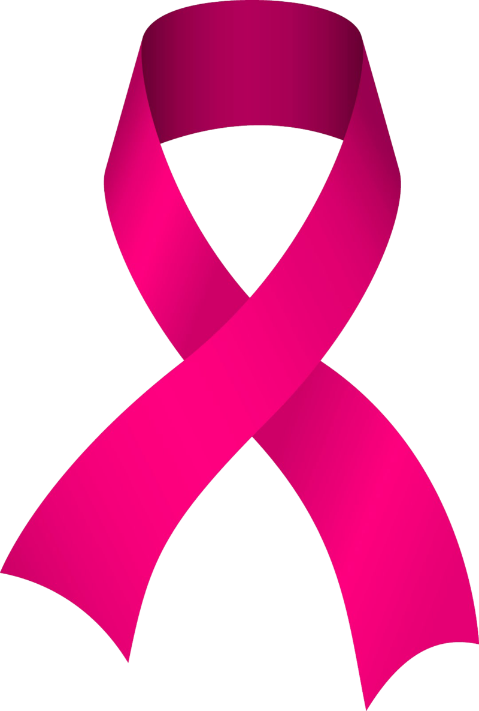

Outubro Rosa
Informação que salva vidas
Início
Sobre
Prevenção
Sinais de Alerta
Links Úteis
Sites e Instituições oficiais
Instituto Nacional de Câncer (INCA)
https://www.gov.br/inca/pt-br
Ministério da Saúde
https://www.gov.br/saude/pt-br/sus
Organização Pan-Americana da Saúde
https://www.paho.org/pt